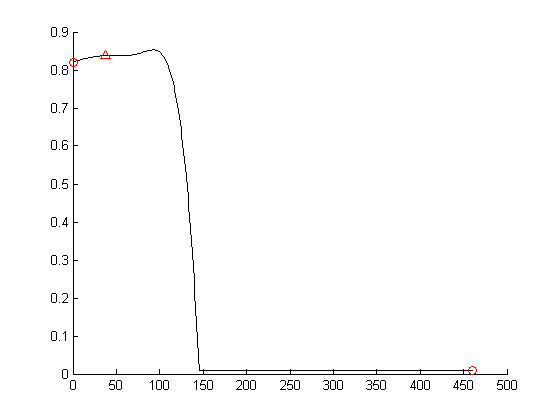

Trajectory optimization using pattern search
Back to the main page.
Contents
initialization
close all; clear all; clc % helper for displaying the file source in web browser openInEditor = @(fname) edit(fullfile(pwd, fname));
Dwell time optimization
Conduct dwell time optimization using Pattern Search method
[r, dwellTime] = dwellopt(wa, wd, wf, w1, w2, crt, strokeTime, timeStep, stepAngleDeg, leafWidth)
varargin:
@params to be optimized
wa -- weight factors of number of acceleration steps, (0, 1)
wd -- weight factors of number of deceleration steps, (0, 1)
wf -- weight factors of initial frequency, (0, 1)
w1 -- to enlarge amplitude of peaks or valleys
w2 -- to braoden step differences
@params to set
ogee -- initial dwell time data
strokeTime -- time per a stroke [s]
timeStep -- time step
stepAngleDeg -- step angle in degree
leafWidth -- width of the dynamic leaf
varargout:
r -- RMSD of dwell time
dwellTime -- calculated dwell timeSource code:
leafWidth = 60; % 60 mm timeStep = 0.001; % 1ms stepAngleDeg = 1.8 / 8; % degree % load the latest edition of DWELL_TIME_*.mat latestFile = selatest('data', 'DWELL_TIME_*.mat'); D = load(latestFile); % call the script for dividing splines into S-curves useDefaultSettings = false; spdivRun % append C to DWELL_TIME_*.mat save(latestFile, 'C', '-append') disp(['... append C to ' latestFile]) % Profile the trajectory optimization % profile on % call the script for generating the ion beam current density distribution useDefaultSettings = false; dwelloptRun % profile off % profsave(profile('info'),'dwellopt_profile') fileName = ['data/OPT_RESULT_' num2str(now, 12) '.mat']; save(fileName, 'C', 'params', 'rmsds', 'optDwellTime') disp(['... saved as ' fileName])
... append C to data\DWELL_TIME_2_36_735934.471040.mat
Warning: matlabpool will be removed in a future release.
To query the size of an already started parallel pool, query the 'NumWorkers'
property of the pool.
To check if a pool is already started use 'isempty(gcp('nocreate'))'.
Warning: matlabpool will be removed in a future release.
Use parpool instead.
Starting matlabpool using the 'local' profile ... connected to 3 workers.
Iter f-count f(x) MeshSize Method
0 1 0.0130822 0.1
1 41 0.0113547 0.1 Successful Poll
2 81 0.0103777 0.1 Successful Poll
3 121 0.0103431 0.1 Successful Poll
4 161 0.0103275 0.1 Successful Poll
5 201 0.0103194 0.1 Successful Poll
6 241 0.0103194 0.05 Refine Mesh
7 281 0.0103194 0.025 Refine Mesh
8 321 0.0102182 0.05 Successful Poll
9 361 0.0102143 0.1 Successful Poll
10 401 0.0102143 0.05 Refine Mesh
11 441 0.0102143 0.025 Refine Mesh
Maximum number of iterations exceeded: increase options.MaxIter.
Iter f-count f(x) MeshSize Method
0 1 0.0170078 0.1
1 41 0.0133674 0.1 Successful Poll
2 81 0.0122197 0.1 Successful Poll
3 121 0.0122151 0.1 Successful Poll
4 161 0.0122073 0.1 Successful Poll
5 201 0.0122029 0.1 Successful Poll
6 241 0.0121968 0.1 Successful Poll
7 281 0.0121968 0.05 Refine Mesh
8 321 0.0121968 0.025 Refine Mesh
9 361 0.0121968 0.0125 Refine Mesh
10 401 0.0118597 0.025 Successful Poll
11 441 0.0118597 0.0125 Refine Mesh
Maximum number of iterations exceeded: increase options.MaxIter.
Iter f-count f(x) MeshSize Method
0 1 0.0229619 0.1
1 41 0.017016 0.1 Successful Poll
2 81 0.0155764 0.1 Successful Poll
3 121 0.0152874 0.1 Successful Poll
4 161 0.0145791 0.1 Successful Poll
5 201 0.0143945 0.1 Successful Poll
6 241 0.014269 0.1 Successful Poll
7 281 0.0140065 0.1 Successful Poll
8 321 0.0139039 0.1 Successful Poll
9 361 0.0138519 0.1 Successful Poll
10 401 0.0138045 0.1 Successful Poll
11 441 0.0137624 0.1 Successful Poll
Maximum number of iterations exceeded: increase options.MaxIter.
Iter f-count f(x) MeshSize Method
0 1 0.0451096 0.1
1 35 0.0345121 0.1 Successful Poll
2 69 0.0300369 0.1 Successful Poll
3 103 0.0242681 0.1 Successful Poll
4 137 0.0224695 0.1 Successful Poll
5 171 0.0198508 0.1 Successful Poll
6 205 0.0188183 0.1 Successful Poll
7 239 0.0172909 0.1 Successful Poll
8 273 0.0140426 0.1 Successful Poll
9 307 0.0139779 0.1 Successful Poll
10 341 0.0133299 0.1 Successful Poll
11 375 0.0132769 0.1 Successful Poll
Maximum number of iterations exceeded: increase options.MaxIter.
Iter f-count f(x) MeshSize Method
0 1 0.0953977 0.1
1 23 0.0738006 0.1 Successful Poll
2 45 0.0637556 0.1 Successful Poll
3 67 0.0553925 0.1 Successful Poll
4 89 0.0476817 0.1 Successful Poll
5 111 0.0425659 0.1 Successful Poll
6 133 0.0359054 0.1 Successful Poll
7 155 0.028694 0.1 Successful Poll
8 177 0.0271727 0.1 Successful Poll
9 199 0.0263981 0.1 Successful Poll
10 221 0.0251034 0.1 Successful Poll
11 243 0.0239125 0.1 Successful Poll
Maximum number of iterations exceeded: increase options.MaxIter.
Iter f-count f(x) MeshSize Method
0 1 0.0739774 0.1
1 23 0.0597206 0.1 Successful Poll
2 45 0.0486032 0.1 Successful Poll
3 67 0.0377876 0.1 Successful Poll
4 89 0.0333647 0.1 Successful Poll
5 111 0.0282088 0.1 Successful Poll
6 133 0.0254898 0.1 Successful Poll
7 155 0.0232771 0.1 Successful Poll
8 177 0.0227275 0.1 Successful Poll
9 199 0.0220221 0.1 Successful Poll
10 221 0.0202274 0.1 Successful Poll
11 243 0.0191625 0.1 Successful Poll
Maximum number of iterations exceeded: increase options.MaxIter.
Iter f-count f(x) MeshSize Method
0 1 0.0626013 0.1
1 23 0.0564139 0.1 Successful Poll
2 45 0.0525156 0.1 Successful Poll
3 67 0.0483169 0.1 Successful Poll
4 89 0.0439464 0.1 Successful Poll
5 110 0.0416042 0.1 Successful Poll
6 131 0.0346064 0.1 Successful Poll
7 152 0.0323171 0.1 Successful Poll
8 173 0.029337 0.1 Successful Poll
9 194 0.0276406 0.1 Successful Poll
10 215 0.0237422 0.1 Successful Poll
11 235 0.0222081 0.1 Successful Poll
Maximum number of iterations exceeded: increase options.MaxIter.
Iter f-count f(x) MeshSize Method
0 1 0.0539048 0.1
1 23 0.0432295 0.1 Successful Poll
2 45 0.0390839 0.1 Successful Poll
3 67 0.0337934 0.1 Successful Poll
4 89 0.0324626 0.1 Successful Poll
5 111 0.0307849 0.1 Successful Poll
6 133 0.0297714 0.1 Successful Poll
7 155 0.027809 0.1 Successful Poll
8 176 0.0261304 0.1 Successful Poll
9 197 0.0243688 0.1 Successful Poll
10 218 0.0221395 0.1 Successful Poll
11 239 0.0178028 0.1 Successful Poll
Maximum number of iterations exceeded: increase options.MaxIter.
Iter f-count f(x) MeshSize Method
0 1 0.0406264 0.1
1 23 0.0352019 0.1 Successful Poll
2 45 0.0318304 0.1 Successful Poll
3 67 0.0297176 0.1 Successful Poll
4 89 0.0257044 0.1 Successful Poll
5 111 0.0236228 0.1 Successful Poll
6 132 0.0212566 0.1 Successful Poll
7 153 0.020078 0.1 Successful Poll
8 174 0.0176761 0.1 Successful Poll
9 195 0.016721 0.1 Successful Poll
10 216 0.0154646 0.1 Successful Poll
11 237 0.0150515 0.1 Successful Poll
Maximum number of iterations exceeded: increase options.MaxIter.
Iter f-count f(x) MeshSize Method
0 1 0.0246639 0.1
1 23 0.0228865 0.1 Successful Poll
2 45 0.0207423 0.1 Successful Poll
3 67 0.0179256 0.1 Successful Poll
4 89 0.0150989 0.1 Successful Poll
5 111 0.0132385 0.1 Successful Poll
6 132 0.0109402 0.1 Successful Poll
7 153 0.00957737 0.1 Successful Poll
8 174 0.00888637 0.1 Successful Poll
9 195 0.00804402 0.1 Successful Poll
10 216 0.00756847 0.1 Successful Poll
11 237 0.00728386 0.1 Successful Poll
Maximum number of iterations exceeded: increase options.MaxIter.
Iter f-count f(x) MeshSize Method
0 1 0.0233064 0.1
1 23 0.0184331 0.1 Successful Poll
2 45 0.0156312 0.1 Successful Poll
3 67 0.0152837 0.1 Successful Poll
4 89 0.012907 0.1 Successful Poll
5 111 0.0120354 0.1 Successful Poll
6 133 0.0117601 0.1 Successful Poll
7 155 0.0113779 0.1 Successful Poll
8 177 0.0112004 0.1 Successful Poll
9 199 0.0108291 0.1 Successful Poll
10 221 0.00936574 0.1 Successful Poll
11 243 0.00936574 0.05 Refine Mesh
Maximum number of iterations exceeded: increase options.MaxIter.
Iter f-count f(x) MeshSize Method
0 1 0.0213199 0.1
1 29 0.0179316 0.1 Successful Poll
2 57 0.0159349 0.1 Successful Poll
3 85 0.0158544 0.1 Successful Poll
4 113 0.0158077 0.1 Successful Poll
5 141 0.0157814 0.1 Successful Poll
6 169 0.0157748 0.1 Successful Poll
7 197 0.0157748 0.05 Refine Mesh
8 225 0.0157655 0.1 Successful Poll
9 253 0.0157618 0.1 Successful Poll
10 281 0.0157589 0.1 Successful Poll
11 309 0.0157552 0.1 Successful Poll
Maximum number of iterations exceeded: increase options.MaxIter.
Iter f-count f(x) MeshSize Method
0 1 0.0258307 0.1
1 17 0.0241691 0.1 Successful Poll
2 33 0.0232666 0.1 Successful Poll
3 49 0.0230614 0.1 Successful Poll
4 65 0.0230614 0.05 Refine Mesh
5 81 0.0230614 0.025 Refine Mesh
6 97 0.0230614 0.0125 Refine Mesh
7 113 0.0230024 0.025 Successful Poll
8 129 0.0230024 0.0125 Refine Mesh
9 145 0.0230024 0.00625 Refine Mesh
Optimization terminated: change in X less than options.TolX.
Iter f-count f(x) MeshSize Method
0 1 0.0111537 0.1
1 41 0.010601 0.1 Successful Poll
2 81 0.0103602 0.1 Successful Poll
3 121 0.0101787 0.1 Successful Poll
4 161 0.0100808 0.1 Successful Poll
5 201 0.0100092 0.1 Successful Poll
6 241 0.00998408 0.1 Successful Poll
7 281 0.0099282 0.1 Successful Poll
8 321 0.0098473 0.1 Successful Poll
9 361 0.00980323 0.1 Successful Poll
10 401 0.00978457 0.1 Successful Poll
11 441 0.00977867 0.1 Successful Poll
Maximum number of iterations exceeded: increase options.MaxIter.
Iter f-count f(x) MeshSize Method
0 1 0.0146464 0.1
1 41 0.0121009 0.1 Successful Poll
2 81 0.0119908 0.1 Successful Poll
3 121 0.0119118 0.1 Successful Poll
4 161 0.0118664 0.1 Successful Poll
5 201 0.0112392 0.1 Successful Poll
6 241 0.0110974 0.1 Successful Poll
7 281 0.0109076 0.1 Successful Poll
8 321 0.010883 0.1 Successful Poll
9 361 0.010839 0.1 Successful Poll
10 401 0.0108172 0.1 Successful Poll
11 441 0.0108172 0.05 Refine Mesh
Maximum number of iterations exceeded: increase options.MaxIter.
Iter f-count f(x) MeshSize Method
0 1 0.0334499 0.1
1 35 0.028028 0.1 Successful Poll
2 69 0.0203905 0.1 Successful Poll
3 103 0.0177836 0.1 Successful Poll
4 137 0.0160861 0.1 Successful Poll
5 171 0.0143675 0.1 Successful Poll
6 205 0.0135084 0.1 Successful Poll
7 239 0.0129007 0.1 Successful Poll
8 273 0.0128081 0.1 Successful Poll
9 307 0.0127952 0.1 Successful Poll
10 341 0.012777 0.1 Successful Poll
11 375 0.0127633 0.1 Successful Poll
Maximum number of iterations exceeded: increase options.MaxIter.
Iter f-count f(x) MeshSize Method
0 1 0.0882016 0.1
1 23 0.0767073 0.1 Successful Poll
2 45 0.0579215 0.1 Successful Poll
3 67 0.0497473 0.1 Successful Poll
4 88 0.0452095 0.1 Successful Poll
5 109 0.0407687 0.1 Successful Poll
6 130 0.0374597 0.1 Successful Poll
7 151 0.0347742 0.1 Successful Poll
8 172 0.0323028 0.1 Successful Poll
9 193 0.0305223 0.1 Successful Poll
10 214 0.0293211 0.1 Successful Poll
11 235 0.0278066 0.1 Successful Poll
Maximum number of iterations exceeded: increase options.MaxIter.
Iter f-count f(x) MeshSize Method
0 1 0.0842056 0.1
1 23 0.0661714 0.1 Successful Poll
2 45 0.0487398 0.1 Successful Poll
3 67 0.0341964 0.1 Successful Poll
4 88 0.0310617 0.1 Successful Poll
5 109 0.029509 0.1 Successful Poll
6 130 0.028208 0.1 Successful Poll
7 151 0.0269207 0.1 Successful Poll
8 172 0.0266516 0.1 Successful Poll
9 193 0.0263543 0.1 Successful Poll
10 214 0.0262799 0.1 Successful Poll
11 235 0.0260371 0.1 Successful Poll
Maximum number of iterations exceeded: increase options.MaxIter.
Iter f-count f(x) MeshSize Method
0 1 0.0781407 0.1
1 23 0.0606412 0.1 Successful Poll
2 45 0.0458868 0.1 Successful Poll
3 67 0.0408264 0.1 Successful Poll
4 89 0.0339571 0.1 Successful Poll
5 111 0.0292716 0.1 Successful Poll
6 133 0.0261105 0.1 Successful Poll
7 155 0.0246228 0.1 Successful Poll
8 177 0.0223619 0.1 Successful Poll
9 199 0.0217294 0.1 Successful Poll
10 221 0.0205731 0.1 Successful Poll
11 243 0.019969 0.1 Successful Poll
Maximum number of iterations exceeded: increase options.MaxIter.
Iter f-count f(x) MeshSize Method
0 1 0.0718602 0.1
1 23 0.0590035 0.1 Successful Poll
2 45 0.0507257 0.1 Successful Poll
3 67 0.0446443 0.1 Successful Poll
4 89 0.0382493 0.1 Successful Poll
5 111 0.0352574 0.1 Successful Poll
6 133 0.0315049 0.1 Successful Poll
7 155 0.027873 0.1 Successful Poll
8 177 0.0266096 0.1 Successful Poll
9 199 0.0254978 0.1 Successful Poll
10 221 0.0236787 0.1 Successful Poll
11 243 0.0214639 0.1 Successful Poll
Maximum number of iterations exceeded: increase options.MaxIter.
Iter f-count f(x) MeshSize Method
0 1 0.0525206 0.1
1 23 0.0467788 0.1 Successful Poll
2 45 0.0430912 0.1 Successful Poll
3 67 0.0376259 0.1 Successful Poll
4 89 0.0344637 0.1 Successful Poll
5 111 0.032451 0.1 Successful Poll
6 133 0.0296416 0.1 Successful Poll
7 155 0.0268726 0.1 Successful Poll
8 177 0.0250319 0.1 Successful Poll
9 199 0.0231007 0.1 Successful Poll
10 221 0.0211207 0.1 Successful Poll
11 243 0.0192536 0.1 Successful Poll
Maximum number of iterations exceeded: increase options.MaxIter.
Iter f-count f(x) MeshSize Method
0 1 0.0334978 0.1
1 23 0.0295081 0.1 Successful Poll
2 45 0.0252016 0.1 Successful Poll
3 67 0.0224064 0.1 Successful Poll
4 89 0.020972 0.1 Successful Poll
5 111 0.0195562 0.1 Successful Poll
6 133 0.0172191 0.1 Successful Poll
7 155 0.0155145 0.1 Successful Poll
8 177 0.0127374 0.1 Successful Poll
9 199 0.0102097 0.1 Successful Poll
10 221 0.00819875 0.1 Successful Poll
11 243 0.00680518 0.1 Successful Poll
Maximum number of iterations exceeded: increase options.MaxIter.
Iter f-count f(x) MeshSize Method
0 1 0.01324 0.1
1 23 0.00953038 0.1 Successful Poll
2 45 0.00938618 0.1 Successful Poll
3 67 0.00822514 0.1 Successful Poll
4 89 0.00681842 0.1 Successful Poll
5 111 0.00574268 0.1 Successful Poll
6 133 0.00574268 0.05 Refine Mesh
7 155 0.00571651 0.1 Successful Poll
8 177 0.00571651 0.05 Refine Mesh
9 199 0.00563665 0.1 Successful Poll
10 221 0.00563665 0.05 Refine Mesh
11 243 0.00538903 0.1 Successful Poll
Maximum number of iterations exceeded: increase options.MaxIter.
Iter f-count f(x) MeshSize Method
0 1 0.0208588 0.1
1 23 0.0196064 0.1 Successful Poll
2 45 0.0185786 0.1 Successful Poll
3 67 0.0183191 0.1 Successful Poll
4 89 0.0180994 0.1 Successful Poll
5 110 0.0179972 0.1 Successful Poll
6 131 0.0177864 0.1 Successful Poll
7 152 0.0176071 0.1 Successful Poll
8 173 0.0176071 0.05 Refine Mesh
9 194 0.0153329 0.1 Successful Poll
10 215 0.0140586 0.1 Successful Poll
11 236 0.0123721 0.1 Successful Poll
Maximum number of iterations exceeded: increase options.MaxIter.
Iter f-count f(x) MeshSize Method
0 1 0.0174537 0.1
1 29 0.016126 0.1 Successful Poll
2 57 0.0153746 0.1 Successful Poll
3 85 0.0147897 0.1 Successful Poll
4 113 0.0147083 0.1 Successful Poll
5 141 0.0143298 0.1 Successful Poll
6 169 0.0142149 0.1 Successful Poll
7 197 0.0142149 0.05 Refine Mesh
8 225 0.013334 0.1 Successful Poll
9 252 0.012937 0.1 Successful Poll
10 279 0.0128516 0.1 Successful Poll
11 306 0.0128516 0.05 Refine Mesh
Maximum number of iterations exceeded: increase options.MaxIter.
... saved as data/OPT_RESULT_735938.267875.mat
